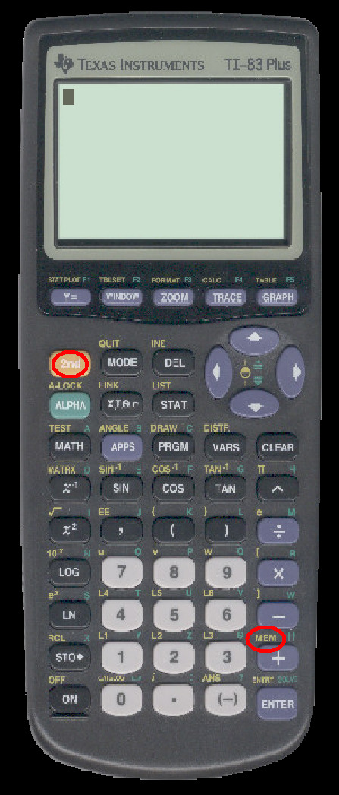
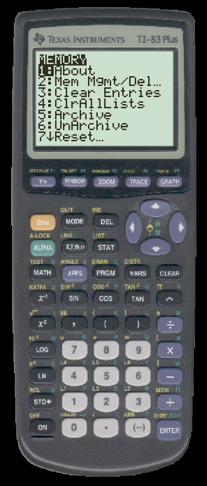
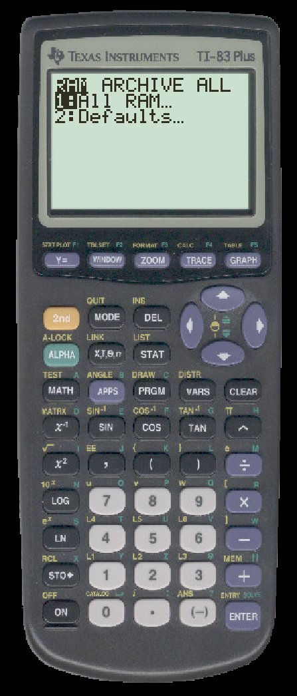
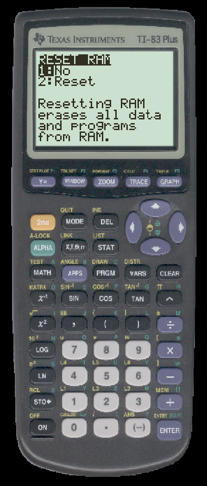

TO RESET THE MEMORY OF A TI
Select 2nd-MEM

2nd-MEM will bring up this menu:

Select the option ``Reset...''
You will next see this menu:

Select ``1: All RAM.''
You have one more confirmation menu:

Select ``2: Reset.''